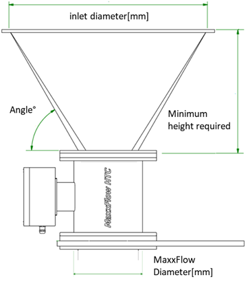
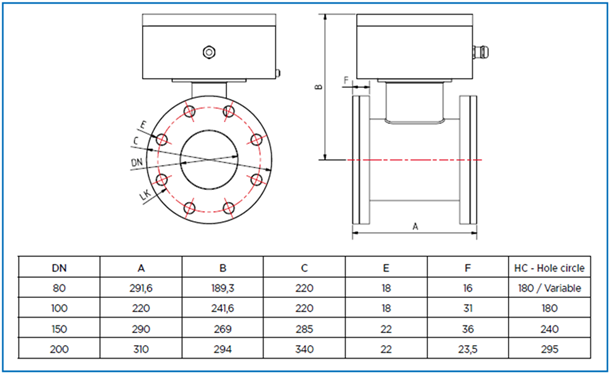

1 질량농도환산 ug/m3 mg/m3 g/m3
1 g/m3 는 1000 mg/m3 와 같습니다
2 가스농도 환산 ppm vol% mg/m3
ppm 과 부피퍼센트는 조건과 무관합니다. mg/m3 변환은 온도·압력 조건에 따라 바뀝니다.
mg/m3 = ppm × MW × P(Pa) / (R × T(K)) × 1e-3
ppm = mg/m3 × (R × T(K)) / (MW × P(Pa)) × 1e3
부피퍼센트 = ppm / 10000
3 압력단위 환산 Pa kPa bar mbar atm mmHg
가스농도 환산에서 사용되는 압력도 같은 로직으로 Pa로 내부 환산됩니다
4 유량단위 환산 m3/h L/min Nm3/h NL/min
여기 Nm3 표시는 단위 스케일 환산입니다. 실제 운전조건 보정은 6번에서 계산하세요.
5 DustTrack 중량 팩터 계산기 엑셀 수식 동일
6 유량보정 Actual ↔ Normal
Actual은 운전조건 유량, Normal은 기준조건 보정 유량입니다.
8 MaxxFlow / SolidFlow / PicoFlow 유량농도환산 ENVEA 계산 시트
엑셀 Calculation of parameters 시트 수식을 그대로 적용합니다.
9 MaxxFlow 파이프 레듀싱 사이즈 계산 Pipe reduction

이미지 파일을 같은 폴더에 업로드하세요: pipe_reduction_img1.png

이미지 파일을 같은 폴더에 업로드하세요: pipe_reduction_img2.png